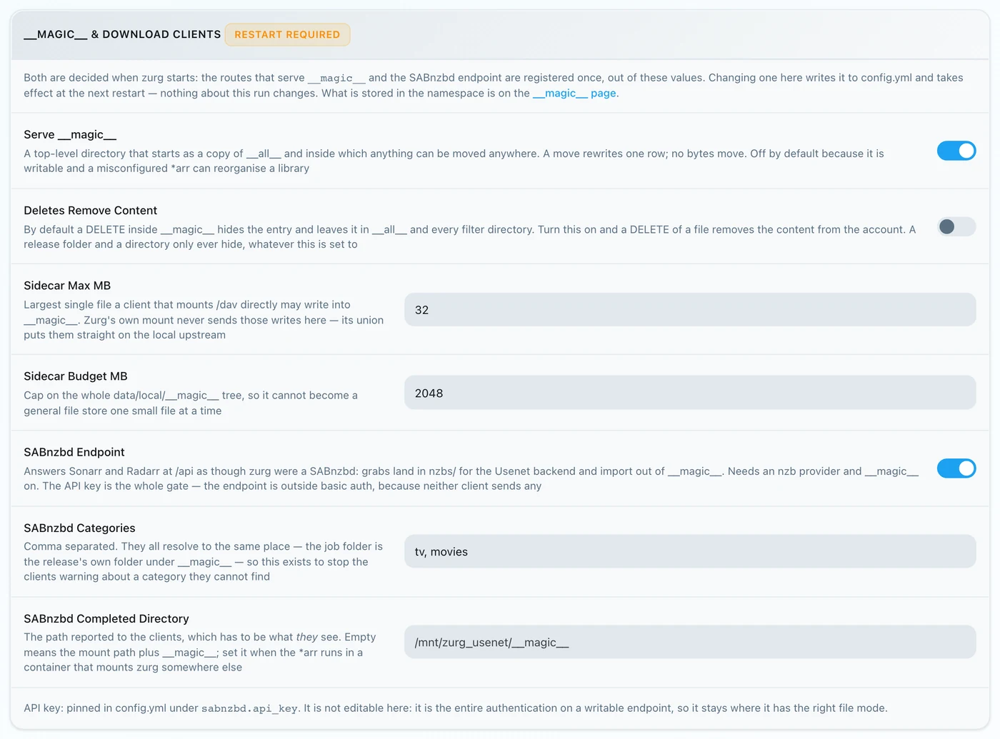
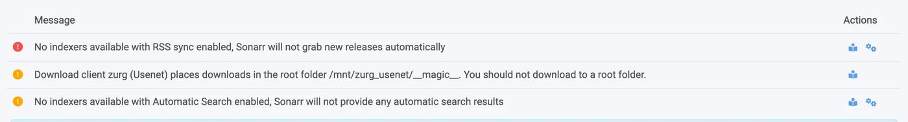
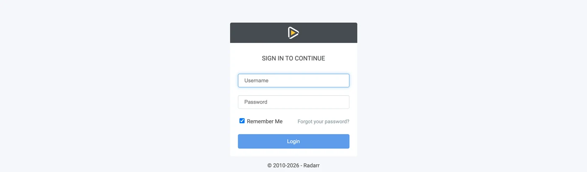
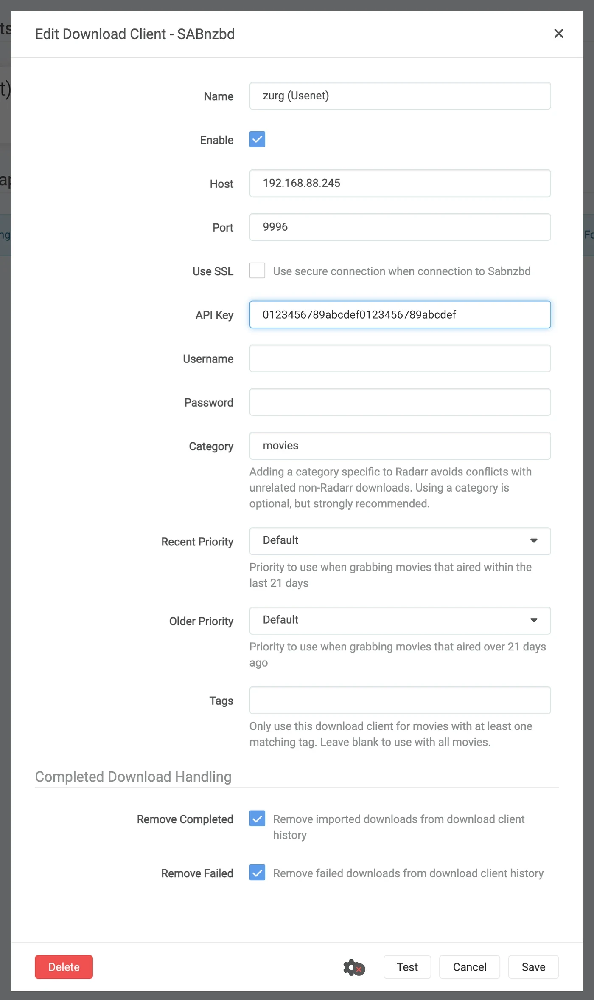

Sonarr y Radarr, paso a paso
Hay tres formas de usar Sonarr y Radarr con zurg. Elige quién busca en zurg o en los *arr. Mira cuál elegir.
Las dos primeras pueden funcionar a la vez. Comparten la misma carpeta __magic__.
Apunta Sonarr y Radarr a zurg para obtener contenido de Usenet sin ningún cliente. No se descarga ni se descomprime ningún vídeo completo durante una captura. Los NZB y las cachés sí usan disco. Esta página trata sobre Usenet. El endpoint de torrents usa los mismos clientes y comparte la carpeta. Mira Sonarr y Radarr para torrents.
Todo lo que aparece abajo se capturó con zurg nightly-993-g99bcf9a4, Sonarr 4.0.19.2979 y Radarr 6.3.0.10514, en una instalación real con una cuenta de Usenet real. Los nombres de host y de usuario se han cambiado a you@zurg-server. Los nombres de indexadores son my-indexer. Las claves de API y los recuentos de biblioteca son ilustrativos. No se alteró nada más de la salida capturada. Las líneas de log de torbox_nzb se leyeron del código fuente de zurg el 2026-11-09, no se capturaron en directo.
Antes de empezar
Tienen que cumplirse tres cosas. Revísalas todas ahora; si alguna falla, más adelante se verá como un problema que no tiene nada que ver.
- zurg tiene un proveedor
nzb, o unotorbox_nzb(TorBox Pro). Sin uno, no hay nada que lea lo que escribe el endpoint, y cada trabajo aparece como Failed después de 30 minutos, cuando zurg deja de esperar a que aparezca en la biblioteca. Consulta Usenet, o TorBox hosted Usenet paratorbox_nzb. magic.enabledestá entrue. Sin eso, el directorio de completados no existe y todas las importaciones fallan. Consulta__magic__.- El montaje debe ser visible para el *arr en la ruta que informa zurg. Si Sonarr se ejecuta en un contenedor, lee el
paso 8 antes de configurar nada. Si está instalado como una aplicación normal en la misma máquina, ve el montaje donde zurg lo monta, con una advertencia en cada sistema:- Linux: un *arr que se ejecuta con un usuario distinto al de zurg ve una carpeta vacía hasta que se active
user_allow_other. Consulta Configuración en Linux. - macOS: ejecútalo con el mismo usuario que zurg. El montaje es
/Volumes/Zurga menos que hayas cambiadomount_path. - Windows: ejecuta Sonarr y Radarr como aplicación de bandeja, que ofrece su instalador, y no como servicio de Windows. La unidad
Z:de zurg pertenece a la sesión en la que has iniciado sesión, y un servicio se ejecuta fuera de ella, así que no ve la unidad. Consulta las reglas de sesión.
- Linux: un *arr que se ejecuta con un usuario distinto al de zurg ve una carpeta vacía hasta que se active
Revisa los dos primeros directamente en el archivo de configuración, en el directorio de trabajo de zurg. En Windows, abre config.yml en Notepad en su lugar.
$ grep -A6 '^providers:' config.yml
providers:
- type: nzb
nntp:
host: news.example.com
port: 563
tls: true
username: <redacted>
password: <redacted>
$ grep -A4 '^magic:' config.yml
magic:
enabled: true
allow_delete: false
sidecar_max_mb: 32
sidecar_budget_mb: 2048allow_delete: false es el valor por defecto seguro y no afecta a las importaciones: borrar algo dentro de __magic__ solo oculta la entrada, en lugar de eliminar contenido de la cuenta.
1. Activa el endpoint
Dos formas, mismo resultado. Ambas escriben en config.yml y ambas necesitan un reinicio: las rutas que sirven __magic__ y el endpoint de SABnzbd se registran una sola vez, cuando zurg arranca.
Opción A — el panel
Abre el dashboard de zurg, haz clic en Config y desplázate hasta __magic__ & Download Clients. Activa Serve __magic__ y SABnzbd Endpoint, y luego pon SABnzbd Categories en tv, movies.

Config es donde está el ajuste; Magic es donde verás llegar las descargas más adelante.

Deja SABnzbd Completed Directory vacío, a menos que tu *arr monte zurg en una ruta distinta a la de zurg. Consulta el
Opción B — config.yml
Añade el bloque a mano y reinicia zurg.
magic:
enabled: true
sabnzbd:
enabled: true
api_key: "" # empty = zurg generates one and keeps it
categories: [tv, movies]
complete_dir: "" # empty = <mount_path>/__magic__/__all__Las categorías no son carpetas. Todas apuntan al mismo sitio: la carpeta de un trabajo es la carpeta propia de la release dentro de __magic__/__all__. La lista sirve solo para que Sonarr y Radarr dejen de avisar de una categoría que no encuentran. Si la categoría de Sonarr es tv, tv tiene que estar en esta lista.
Reinicia zurg y luego confirma que el proveedor se ha cargado:

Con una sola fila nzb o torbox_nzb basta para el endpoint.
2. Busca la API key
La clave de API es toda la autenticación de este endpoint, así que configúrala bien una vez y no la pegues en ningún sitio público.
Si dejaste api_key vacío, zurg generó una en el primer arranque y la guardó en data/sabnzbd-apikey:
$ cat data/sabnzbd-apikey
0123456789abcdef0123456789abcdef
Clave de ejemplo; la tuya será diferente. El archivo sobrevive a los reinicios, así que la clave es estable una vez generada.
Si tú mismo configuraste api_key, está en config.yml y no se escribe ningún archivo. El panel te indica en cuál de los dos casos estás, al final del bloque del paso 1. Dice pinned in config.yml under sabnzbd.api_key o generated and kept in data/sabnzbd-apikey.
Este endpoint queda fuera de la autenticación básica de zurg. Ni Sonarr ni Radarr envían nunca autenticación básica a un cliente de descargas, y su capa HTTP convierte un 401 en "unable to connect" sin nada útil que te ayude a resolverlo. Por eso zurg deja /api exento a propósito. La clave de API es la única barrera. Trata el puerto como tratas el resto de zurg: en una red de confianza, o detrás de algo que lo sea.
3. Comprueba que responde
Haz esto antes de tocar Sonarr. Tarda diez segundos y te permite saber desde el principio si el fallo está en zurg o en el *arr durante el resto de la configuración.
$ SAB=0123456789abcdef0123456789abcdef
$ ZURG=192.168.88.245:9996
$ curl -s "http://$ZURG/api?mode=version&apikey=$SAB&output=json"
{"version":"4.5.1"}
$ curl -s "http://$ZURG/api?mode=get_config&apikey=$SAB&output=json" \
| jq '.config.misc.complete_dir, [.config.categories[].name]'
"/mnt/zurg_usenet/__magic__/__all__"
[ "*", "tv", "movies" ]En PowerShell. Escribe curl.exe, no curl: el curl de Windows PowerShell es otro comando.
PS> $SAB = "0123456789abcdef0123456789abcdef"
PS> $ZURG = "192.168.88.245:9996"
PS> curl.exe -s "http://$ZURG/api?mode=version&apikey=$SAB&output=json"
{"version":"4.5.1"}
PS> (Invoke-RestMethod "http://$ZURG/api?mode=get_config&apikey=$SAB&output=json").config.misc.complete_dir
Z:/__magic__/__all__complete_dir es la ruta que zurg entregará a los clientes. Comprueba ahora que es una ruta que ellos pueden abrir.
Después, comprueba que una clave incorrecta se rechaza de verdad (en Windows, usa curl.exe con las mismas URLs):
$ curl -s "http://$ZURG/api?mode=queue&apikey=wrongkey&output=json"
{"status":false,"error":"API Key Incorrect"}
$ curl -s "http://$ZURG/api?mode=queue&output=json"
{"status":false,"error":"API Key Required"}mode=version no es una prueba de autenticación. Responde {"version":"4.5.1"} incluso con una clave incorrecta. Así se comporta el SABnzbd real, y zurg lo copia. Usa mode=queue o mode=get_config si lo que quieres probar es la clave.
Las dos formas de URL funcionan, así que cualquiera sirve en el campo URL Base del cliente:
Si /api devuelve un 404 normal, sabnzbd.enabled sigue en false o no has reiniciado zurg después de cambiarlo.
4. Crea las carpetas raíz
Créalas antes de añadirlas, porque el diálogo Add Root Folder de los *arr examina el sistema de archivos en vivo y no ofrecerá una carpeta que no exista.
$ mkdir -p /mnt/zurg_usenet/__magic__/tv /mnt/zurg_usenet/__magic__/movies
$ ls -d /mnt/zurg_usenet/__magic__/tv /mnt/zurg_usenet/__magic__/movies
/mnt/zurg_usenet/__magic__/movies
/mnt/zurg_usenet/__magic__/tvPS> New-Item -ItemType Directory -Force Z:\__magic__\tv, Z:\__magic__\moviesO crea las dos carpetas en el Explorador de Windows.
Sustituye /mnt/zurg_usenet por tu propio mount_path. Si no lo defines, será /mnt/zurg en Linux, /Volumes/Zurg en macOS y Z: en Windows. Los nombres de las carpetas los eliges tú; tv y movies solo coinciden con las categorías.
La carpeta raíz va al lado del directorio de completados, ni en él ni por encima. zurg entrega a los clientes __magic__/__all__, que es tu biblioteca tal como la lista __all__. Tus carpetas raíz van junto a ella, en __magic__/tv y __magic__/movies. No __magic__/__all__, ni __magic__ en sí, ni /mnt/zurg_usenet. Ambos clientes muestran un aviso de health check cuando una carpeta raíz es la carpeta de salida del cliente de descargas, y Radarr también lo muestra cuando una carpeta raíz contiene esa carpeta. Las carpetas hermanas no activan ninguno de los dos avisos, y una importación manual apuntada al directorio de completados tiene entonces una sola release que revisar en lugar de toda tu biblioteca.
Así es como se ve el error. Ambas capturas son reales, de los dos clientes. Se tomaron antes de que el directorio de completados bajara a __magic__/__all__, así que las rutas que aparecen están un nivel por encima de las tuyas; las dos reglas que muestran son las mismas:

Sonarr con el propio directorio de completados añadido como carpeta raíz: avisa porque la carpeta raíz es la carpeta de salida.

Radarr con /mnt/zurg_usenet añadido: avisa también por el padre, cosa que Sonarr no hace. Mueve la carpeta raíz al lado del directorio de completados y ambos avisos desaparecen.
5. Añade el cliente en Sonarr
Un Sonarr recién instalado bloquea todo detrás de una pantalla de primer inicio. Elige Forms (Login Page), define un nombre de usuario y una contraseña, y haz clic en Save.

No te dejará pasar hasta que Authentication Method tenga un valor distinto de None.

Después de Save se cerrará tu sesión una vez y llegarás a la página de inicio de sesión.

Settings → Download Clients
Ve a Settings → Download Clients. En una instalación nueva no hay nada aquí más que la tarjeta +.

Haz clic en el + de "Download Clients", no en el que está más abajo en "Remote Path Mappings".
Elige SABnzbd de la columna Usenet.

zurg imita a SABnzbd en concreto, así que nada más de esta lista funcionará.
El diálogo se abre con los valores por defecto de SABnzbd: localhost, puerto 8080, sin key.

Qué poner en cada campo

La API key mostrada es solo un ejemplo — pega la tuya.
En Docker, "localhost" y el nombre de host engañan. Dentro de un contenedor, localhost es el propio contenedor, y el hostname de la máquina normalmente resuelve a 127.0.1.1, que también es el contenedor. Usa la IP de LAN o de Tailscale del host, nunca localhost ni el hostname a secas, aunque ambos funcionen bien desde tu shell.
Haz clic en Test. Una marca verde significa que pasaron las cuatro comprobaciones del cliente: versión, API key, configuración global y la categoría.

Ahora haz clic en Save.

6. Añade la carpeta raíz en Sonarr
Ve a Settings → Media Management y desplázate hasta abajo.

Haz clic en Add Root Folder. Se abre un explorador de archivos sobre el sistema de archivos de Sonarr, que en Docker es el del contenedor.

Escribe la ruta en el cuadro de arriba. Si el montaje es realmente visible para Sonarr, lo que hay dentro de __magic__ aparece mientras escribes: __all__ con todas las releases, y lo que hayas creado junto a él. Es la prueba más rápida que vas a tener de que el bind mount está bien.

Si esto sale vacío o da error, para y arregla el montaje antes de seguir.

Termina la ruta en __magic__/tv (Z:\__magic__\tv en Windows) y haz clic en Ok.

Si Free Space muestra un número razonable, Sonarr puede leer el montaje; Unmapped Folders cuenta las releases que ya están ahí.
7. Haz lo mismo en Radarr
Idéntico, con dos valores cambiados: la categoría es movies y la root folder es __magic__/movies.

El primer arranque de Radarr funciona igual: activa Forms auth y luego inicia sesión.

Settings → Download Clients → +, y luego SABnzbd dentro de Usenet.

Mismo host, mismo puerto, misma clave. Solo cambia Category: movies, no tv.

Test, tick verde, Save.

Luego ve a Settings → Media Management → Root Folders → Add Root Folder y añade /mnt/zurg_usenet/__magic__/movies.
Un zurg, dos clientes, una sola cola. La cola y el historial de zurg se filtran solo por categoría y por nada más. Dos Sonarr usando tv verán los trabajos del otro; Sonarr en tv y Radarr en movies no. Con un cliente por categoría, este problema nunca aparece.
8. Si tu *arr está en Docker
Este paso es para Docker en un host Linux. Docker Desktop en macOS y Windows ejecuta los contenedores dentro de una máquina virtual. El bind rslave de abajo depende de la propagación de montajes de Linux (ver Docker setup), y pasarle el montaje de zurg a un contenedor en esos sistemas no se ha probado. En macOS y Windows instala Sonarr y Radarr como aplicaciones normales, tal como describe
Tres problemas distintos. El segundo te cuesta una descarga en cada importación. El tercero no te afecta hasta la primera vez que se reinicia zurg.
La ruta que zurg informa tiene que ser una ruta que el cliente pueda abrir
Si el contenedor monta la biblioteca en una ruta distinta a la de zurg, cada importación falla con download doesn't contain intermediate path o con una comprobación de salud de remote-path. Puedes arreglarlo de cualquiera de las dos formas, ambas valen:
- Configura
sabnzbd.complete_dircon la ruta que el cliente ve. Es lo más sencillo cuando hay un solo cliente, o varios que coinciden, y montan la biblioteca en el mismo sitio. - Añade un remote path mapping en el *arr. Úsalo cuando los distintos clientes la montan de forma diferente.
sabnzbd:
complete_dir: "/data/zurg/__magic__/__all__" # what the *arr sees, not what zurg seesPara la segunda opción, ve a Settings → Download Clients y usa el + bajo Remote Path Mappings, el de abajo de la página, no el que usaste en el paso 5.

Host debe ser exactamente la misma cadena de host que escribiste en el cliente de descargas. Remote Path es lo que informa zurg; Local Path es donde lo ve el cliente.
Un solo volumen para la carpeta de descargas y las carpetas raíz
Mover un archivo de __magic__/__all__ a __magic__/tv no cuesta nada porque es un renombrado. Un renombrado solo funciona dentro de un mismo montaje. Si le das al contenedor las dos carpetas como dos volúmenes, ve dos sistemas de archivos. Ambos son el montaje de zurg por debajo y aun así no importa.
volumes: # do not do this
- /mnt/zurg_usenet/__magic__/__all__:/downloads
- /mnt/zurg_usenet/__magic__/tv:/tvEl kernel rechaza el renombrado dentro del contenedor. Sonarr y Radarr entonces copian el archivo y borran el original sin avisar. Cada importación descarga la release completa desde tu cuenta y la escribe en el disco de zurg. La importación sigue teniendo éxito, solo que es lenta. Un episodio de 1.46 GB tardó 50 segundos y generó 2.9 GB de tráfico de esta forma. Con un solo volumen tardó un segundo y no leyó nada.
Dale al contenedor un solo volumen que contenga todo el montaje de zurg. Accede a la carpeta de descargas y a las carpetas raíz a través de él. El bind de la siguiente sección hace exactamente eso. Un Remote Path Mapping o complete_dir después apunta el cliente a __all__ dentro de ese mismo volumen.
Una importación manual con Hardlink/Copy Files también copia. Elige Move Files.
Monta el padre del punto de montaje, no el punto de montaje
Esta es la que cuesta una tarde. También es el único volumen que la sección de arriba pide. Reiniciar zurg desmonta /mnt/zurg_usenet y lo vuelve a montar. Un contenedor que enlazó el propio punto de montaje conserva la conexión fuse con la que se inició, que ahora está muerta. Cada lectura responde Socket not connected, y como ambos clientes comprueban el espacio libre en la carpeta raíz antes de capturar, cada release se rechaza en silencio:
FreeSpaceSpecification: Socket not connectedNingún mensaje de los clientes dice que el montaje está obsoleto, la carpeta sigue apareciendo dentro del contenedor, y una captura interactiva enviada directamente al cliente sigue funcionando. Lo que se ve es un *arr que ha dejado de buscar sin avisar.
Enlaza el directorio padre con rslave, y el nuevo montaje llega como un evento de submontaje que el contenedor sigue:
volumes:
- type: bind
source: /mnt # the parent, not /mnt/zurg_usenet
target: /mnt
bind:
propagation: rslaveRevisa un contenedor después de cada reinicio de zurg. Lo que quieres ver es un tamaño, no un error:
$ docker exec radarr df -h /mnt/zurg_usenet
Filesystem Size Used Avail Use% Mounted on
zurg{PGSq4}: 1.0P 0 1.0P 0% /mnt/zurg_usenetEl petabyte es zurg mostrando un sistema de archivos virtual, no un disco. Es lo esperado, y es lo que satisface la comprobación de espacio libre del *arr.
9. Sigue una descarga de principio a fin
Añade una sola cosa, tráela a mano y sigue todo el proceso de principio a fin. Lo que aparece abajo es una descarga real hecha con la configuración de arriba.
Pídelo
Abre una película (o un episodio), haz clic en Interactive Search y elige un release.

La columna Source muestra nzb, que es el protocolo que zurg puede usar.
Haz clic en el botón de flecha circular al final de la fila para agarrarlo. Si el release no coincide bien, el cliente te pide que confirmes primero el mapeo:

Override and Grab aparece cuando el cliente quiere que confirmes qué es el release. Revisa el mapeo y haz clic en Grab Release. Una descarga automática normal nunca muestra esto.
Llega a la cola

Activity → Queue justo después de la captura. Fíjate en la barra de progreso: está llena, y Time Left muestra un guion. No hay ninguna descarga que medir, así que un trabajo está en cola o completado, y no hay nada en medio. Las otras filas de aquí pertenecen a un segundo Radarr apuntando al mismo zurg y a la misma categoría: mira la nota del paso 7.
zurg escribe el NZB y lo lee
Aug 25 14:44:03 zurg-server zurg[3034965]: INFO nzb Loaded NZB
Last.Week.Tonight.with.John.Oliver.S13E22.480p.WEB.x264-RMTeam.nzb: 4 files
Aug 25 14:50:28 zurg-server zurg[3034965]: INFO nzb Loaded NZB
Untold.The.Testimony.of.Vince.Young.2026.1080p.NF.WEB-DL.DD+5.1.Atmos.H.264-playWEB.nzb: 9 filesLoaded NZB … : N files es la línea que indica que el NZB se analizó bien. Si un trabajo aparece como Failed después de 30 minutos, cuando zurg deja de esperar a que aparezca en la biblioteca, lo que falta es esta línea.
Ocurre la importación

Activity → History. Dos eventos, con segundos de diferencia: Grabbed y, después, Movie Imported.

Status: Downloaded, Size 4.7 GiB, y no se descargó nada.
Comprueba que el archivo es real
La importación movió el archivo a la carpeta raíz. Lee los dos extremos del archivo y pregúntale a ffprobe qué es:
Si tu shell no encuentra ffprobe, usa ~/zurg/bin/ffprobe: el setup pone su propia copia ahí cuando no había ninguna instalada.
$ ls -la "/mnt/zurg_usenet/__magic__/movies/Untold - The Testimony of Vince Young (2026)/"
-rw-r--r-- 1 you you 4920958828 Aug 25 14:53 Untold.The.Testimony…playWEB.mkv
$ dd if="$F" bs=1M count=1 >/dev/null
1048576 bytes (1.0 MB, 1.0 MiB) copied, 0.0429446 s, 24.4 MB/s
$ ffprobe -v error -show_entries format=duration,size,format_name \
-of default=noprint_wrappers=1 "$F"
format_name=matroska,webm
duration=4709.440000
size=4920958828En PowerShell, desde la carpeta de zurg. El setup puso bin\ffprobe.exe ahí a menos que ya hubiera un ffprobe en tu PATH; en ese caso escribe ffprobe:
PS> $F = Get-Item "Z:\__magic__\movies\Untold - The Testimony of Vince Young (2026)\*.mkv"
PS> $F.Length
4920958828
PS> bin\ffprobe.exe -v error -show_entries format=duration,size,format_name -of default=noprint_wrappers=1 $F.FullName
format_name=matroska,webm
duration=4709.440000
size=4920958828Un Matroska de 78 minutos, transmitido desde artículos de Usenet bajo demanda. Los bytes llegan cuando algo los lee, no cuando el *arr importa.
10. Añadir un lanzamiento manualmente
A veces Sonarr o Radarr nunca toma el release que quieres. Los indexadores que busca quizá no lo tienen, o un perfil de calidad o un formato personalizado lo descarta. Puedes pasarle tú mismo el NZB a zurg, bajo la categoría de la app que debería importarlo. Esa app lo importa como si lo hubiera tomado ella.
Si el release está en un indexador que la app busca, prueba primero con la app. Interactive Search también muestra los releases rechazados. Tomar uno lo envía a zurg como cualquier otra descarga. Radarr tomó un release IMAX que su perfil había rechazado, con una puntuación de 0 frente a un formato personalizado obligatorio, y lo importó.
$ SAB=0123456789abcdef0123456789abcdef
$ ZURG=192.168.88.245:9996
# an NZB file you already have (the upload field is called name, as in SABnzbd)
$ curl -s "http://$ZURG/api?mode=addfile&apikey=$SAB&cat=movies" \
-F 'name=@Movie.Title.2024.1080p.WEB-DL.nzb'
{"status":true,"nzo_ids":["SABnzbd_nzo_…"]}
# or a link to one, which zurg downloads itself
$ curl -s -G "http://$ZURG/api" \
--data-urlencode mode=addurl --data-urlencode "apikey=$SAB" --data-urlencode cat=movies \
--data-urlencode 'name=https://indexer.example/getnzb/<id>?r=<indexer-key>' \
--data-urlencode nzbname=Movie.Title.2024.1080p.WEB-DL
{"status":true,"nzo_ids":["SABnzbd_nzo_…"]}En PowerShell, con curl.exe en lugar de curl. Cada uno responde {"status":true,"nzo_ids":[…]} como arriba.
$SAB = "0123456789abcdef0123456789abcdef"
$ZURG = "192.168.88.245:9996"
# an NZB file you already have (the upload field is called name, as in SABnzbd)
curl.exe -s "http://$ZURG/api?mode=addfile&apikey=$SAB&cat=movies" -F "name=@Movie.Title.2024.1080p.WEB-DL.nzb"
# or a link to one, which zurg downloads itself
curl.exe -s -G "http://$ZURG/api" `
--data-urlencode mode=addurl --data-urlencode "apikey=$SAB" --data-urlencode cat=movies `
--data-urlencode "name=https://indexer.example/getnzb/<id>?r=<indexer-key>" `
--data-urlencode nzbname=Movie.Title.2024.1080p.WEB-DL--data-urlencode mantiene el ? y el & del propio enlace dentro de name. El trabajo aparece en la cola de la app en su siguiente revisión, en menos de un minuto.
Cinco cosas deciden qué pasa después.
- La película o serie tiene que estar ya en esa app. Solo importa lo que puede asociar con algo que gestiona.
- El nombre tiene que indicar qué es. El trabajo toma el nombre de archivo del NZB, o
nzbnamesi lo pasas. Sinnzbname,addurlusa el nombre de archivo que sirve el indexador. Ponle un año al nombre. - La categoría elige la app.
cat=moviesllega al Radarr cuyo cliente de descarga usamovies. Cada app solo mira su propia categoría. - El perfil de calidad no bloquea la importación. El archivo que ya tienes sí puede. Radarr no comprueba ni las calidades permitidas ni una puntuación mínima de formato personalizado al importar. Importó un 720p BluRay con puntuación 0 en un perfil que solo permite 2160p y exige una puntuación de 100. También importó un 1080p WEBRip en una película cuyo perfil solo permite 720p. Luego tomó un 1080p BluRay encima como mejora y borró el WEBRip. Un WEB-DL añadido después se detuvo en Activity como Not an upgrade for existing movie file. Activity → Queue → Manual Import lo importa de todos modos y reemplaza el archivo.
- Los fallos los limpias tú. La app nunca pone en la lista negra ni elimina una descarga que no tomó ella. Un release cuyos artículos ya habían caducado en los servidores de noticias volvió de zurg como Failed y se quedó en la cola de Radarr como Download has failed wasn't grabbed by Radarr, skipping automatic download handling. Quítalo de la cola y elige otro release.
Medido el 2026-10-10 con Radarr 6.3, usando tanto addfile como addurl, incluido un perfil que exige un formato personalizado creado a partir de un nombre de release. Cada importación fue un renombrado a __magic__/movies y no se copió nada. Sonarr no se probó.
Gracias a .telmen en Discord por preguntar cómo hacer esto con Usenet.
Ver desde el lado de zurg
La página /magic/ de zurg muestra todos los NZB que el endpoint ha recibido alguna vez. Sonarr y Radarr eliminan los trabajos que han capturado, y el registro se conserva una semana después, para que una consulta que coincida con un borrado responda igual las dos veces. Un trabajo Failed o Stuck (en cola durante más de una hora) que ningún cliente vaya a eliminar nunca, por ejemplo después de dejar de usar zurg como cliente de descargas, se puede limpiar aquí manteniendo pulsado su botón Clear. Al limpiarlo se borra su NZB, a menos que una importación todavía lo esté usando.

Placements son los archivos que los clientes han movido; tombstones son las carpetas de trabajo que borraron después. Si un cliente copia en lugar de mover, la página muestra una tabla roja Imports that were copies. zurg convierte esas copias de nuevo en placements y las borra, pero cada una de ellas fue una descarga completa, así que revisa los volúmenes.

State lo dice todo: Queued significa que zurg todavía no ha terminado con la release, ya sea porque la biblioteca no la ha listado, porque sus tamaños de archivo no se han estabilizado o porque sus artículos no se han comprobado. Completed significa que está lista para importar, y Release indica la carpeta desde la que el cliente importa.
La columna Release se lee de la biblioteca en cada consulta, no se guarda. Si renombras la release en el panel de zurg, si una reparación la reconstruye o si zurg añade un sufijo porque dos releases comparten nombre, el trabajo la sigue.
Qué funciona y qué no
Funciona:
- La prueba de conexión, las cuatro comprobaciones, en ambos clientes.
- Enviar, cola, historial, importar por renombrado y la limpieza posterior a la importación.
- Volver a enviar el mismo release. Cada envío posterior obtiene su propio job id, así el cliente actúa sobre él y no reutiliza el resultado del job anterior. El release de fondo sigue siendo el mismo. Un nuevo envío de un release que una importación anterior ya vació se muestra como Failed. Su carpeta bajo
__magic__/__all__no tiene nada que importar, y Failed hace que el cliente lo añada a la lista negra y pruebe otro. El envío que lo vació sigue mostrando Completed hasta que el cliente lo borre. - Quitar un job de la cola, con o sin borrar el NZB.
mode=addurl, para una persona o una automatización que pasa una URL en lugar de subir el archivo. Ninguno de los *arr lo usa.
No hace:
- No hay progreso. Un job está en cola o completado; no hay un porcentaje intermedio, porque no hay descarga que medir. La cola muestra el tamaño declarado del NZB para que la fila no quede en blanco.
- No hay pausa, reanudación, límite de velocidad, prioridad ni script posterior al procesado. SABnzbd tiene todo esto; zurg no tiene nada a lo que aplicarlo.
del_filesen el borrado del historial de un job terminado se ignora. (Para un job Failed borra el NZB cuando no se importó nada de él.) El cliente quiere decir "la carpeta del job vuelve a ser tuya", pero el archivo que acaba de importar sigue sirviéndose desde ese NZB. La carpeta que quería eliminar ya está eliminada: la borró ella misma, a través del mount.- La autenticación básica no puede proteger este endpoint. La clave de API es la única barrera.
La señal de fallo. Un release sin nada importable se muestra como Failed, y ambos clientes lo añaden a la lista negra y envían una alternativa. Eso incluye un release cuyos archivos están todos rotos, borrados o filtrados; uno que solo contiene .par2, .sfv y archivos auxiliares; uno cuyos archivos son todos de un formato que nada reproduce, que es lo que parece una publicación ofuscada que nombra su conjunto RAR como .z001….z133; y un archivo que ya se abrió y resultó no contener medios. Un conjunto RAR es contenido, no andamiaje: zurg transmite el vídeo directamente desde él. Si un release contiene algo para lo que zurg no tiene extensión, amplía addl_playable_extensions en lugar de añadirlo a la lista negra.
Los artículos se comprueban antes de que un job se dé por terminado. zurg espera a que la biblioteca liste el release y a que sus tamaños de archivo se estabilicen. Después pregunta a los servidores de noticias por el inicio y el final de cada archivo de contenido: los primeros dieciséis artículos y el último. También descarga el primer artículo de cada archivo. Son hasta sesenta y cuatro, más unos pocos en un release con solo unos cuantos archivos. Algunos servidores de noticias siguen diciendo que un artículo existe después de que su contenido fue retirado, y solo una descarga lo demuestra. Un artículo descargado también indica si pertenece a esta publicación y no a otra subida. El job se mantiene en Queued hasta que eso dé una respuesta. El daño que la muestra no alcanza no se detecta aquí; aparece en la lectura que sí lo alcanza. Un release cuyos artículos faltan recibe primero una reparación con PAR2 y se vuelve a comprobar cuando la reparación termina. Si queda completo, sigue adelante. Si todavía le faltan artículos, o si nada puede repararlo, se muestra como Failed con un recuento de lo que falta. Es un fallo de descarga, que es el que los clientes atienden: lo añaden a la lista negra y buscan una alternativa sin intervención, en lugar de importar algo que no va a reproducirse. Con torbox_nzb no hay servidores de noticias ni comprobaciones de artículos: un envío se verifica según si TorBox lo ha descargado.
Una comprobación que no puede terminar no espera para siempre. A veces la comprobación no puede completarse: el pool de conexiones puede estar caído, la cuenta limitada o el recorrido fuera de tiempo. Eso no es una respuesta. El job se mantiene en Queued y se vuelve a preguntar un minuto después. zurg cuenta los intentos del job para que un reinicio no los olvide. Tras treinta intentos fallidos seguidos que abarquen al menos tres horas, el job pasa al historial como Failed. El mensaje incluye el recuento, el periodo y el último error. Una caída con rechazos continuos llega a treinta en menos de una hora y no bloquea la cola por eso.
Un release que sale de la biblioteca hace fallar su job. Un release puede borrarse desde el dashboard, puede eliminarse su NZB del directorio vigilado o puede ser descartado por todas las cuentas. Su job se mantiene en Queued durante quince minutos y después pasa al historial como Failed. El cliente lo añade a la lista negra y envía otro. La espera existe por los reinicios: la biblioteca desvincula todos los releases mientras se carga, y eso no debe interpretarse como un borrado. Nada falla por este motivo en los primeros quince minutos tras arrancar zurg. Un job cuyo release la biblioteca nunca listó no se ve afectado, porque todavía está llegando.
Solución de problemas
¿Sigues atascado? Pregunta en el foro zurg-support de Discord. Obtener ayuda explica qué incluir.